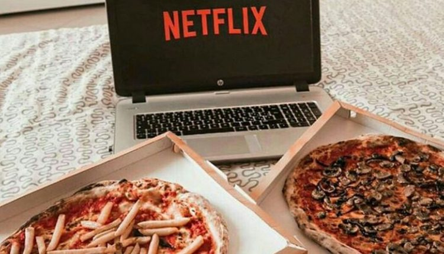

Flexibilité
accessibilité
transformation
La transformation de certains secteurs
Le secteur alimentaire transformé par le e-commerce : l’exemple d’Uber Eats
L’arrivée du e-commerce a changé beaucoup de secteurs et pas seulement l’achat de produits physiques. Il a aussi transformé nos façons de consommer dans d’autres domaines. Par exemple, les plateformes de streaming comme Netflix ont révolutionné l’accès aux films et séries. Dans le secteur alimentaire, des services comme Uber Eats et Deliveroo ont complètement changé le monde de la restauration.
En prenant comme exemple ce secteur alimentaire, on peut analyser la manière dont ces secteurs ont été transformés par le e-commerce :
Les plateformes comme Uber Eats répondent, comme beaucoup d’autres plateformes e-commerce, au besoin de la vie moderne qui est de gagner du temps et de se simplifier la vie. Premièrement, les personnes qui travaillent beaucoup n’ont pas toujours le temps de cuisiner ou d’aller au restaurant. Uber Eats permet de commander des plats variés livrés directement chez soi. Cela propose aussi une solution pour les zones éloignées. Ainsi, les gens qui habitent loin des centres-villes ou dans des endroits moins bien desservis peuvent désormais profiter de repas de restaurants qu’ils n’auraient pas pu visiter. Un autre avantage est la flexibilité. On peut commander quand on veut, à n’importe quel moment de la journée.
En remplaçant restaurant par cinéma et repas par film ou série, on voit facilement le parallèle avec les plateformes de streaming comme Netflix ou Amazon Prime qui fonctionnent sur le même modèle.
Uber Eats permet plus de choix et d’accessibilité pour les consommateurs, avec un accès aux repas plus facile, plus rapide et plus diversifié.
Un large choix de cuisines est possible : on peut commander tout type de plats, que ce soit burgers, pizzas ou spécialités du monde entier (italiennes, asiatiques, végétariennes, etc.). De plus, les budgets sont variés : il est possible de commander des plats simples peu chers ou des menus plus sophistiqués selon son budget. Enfin, c’est un service facile à utiliser. L’application est simple et intuitive. En quelques clics, on peut choisir son repas, passer commande et suivre la livraison en direct.